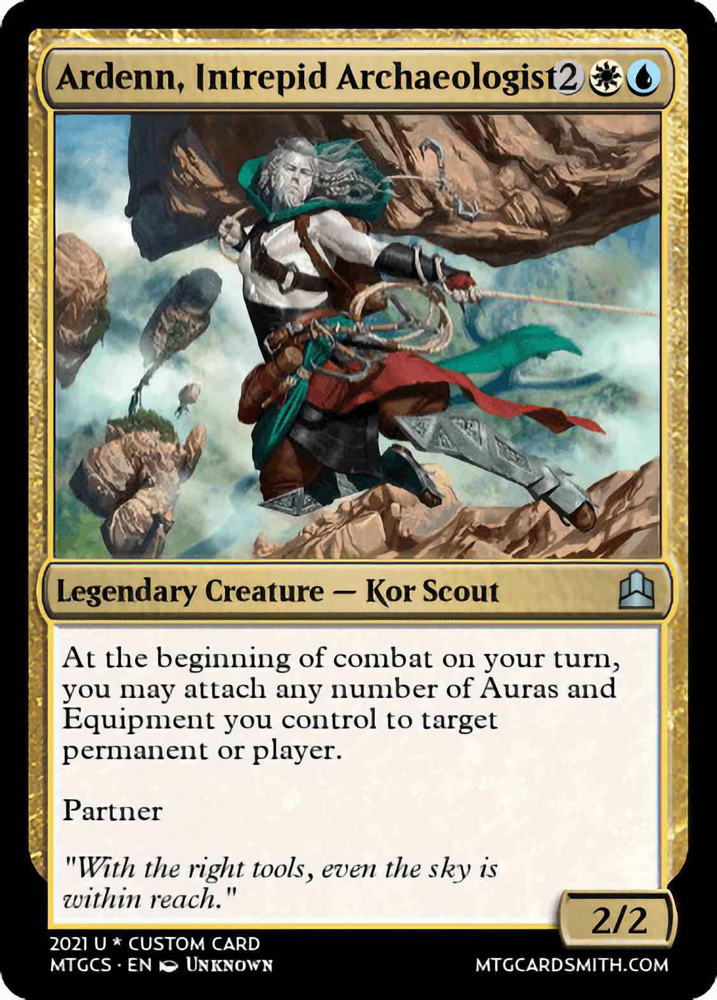
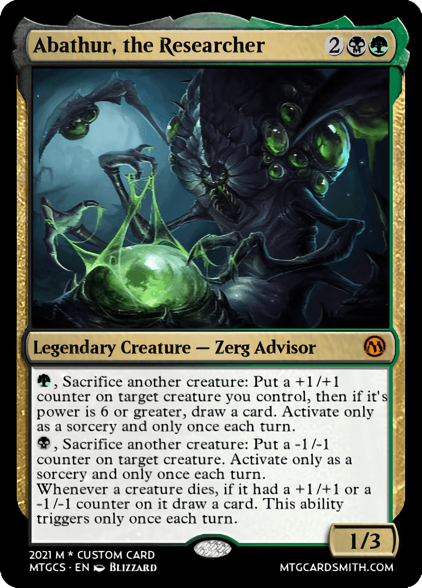
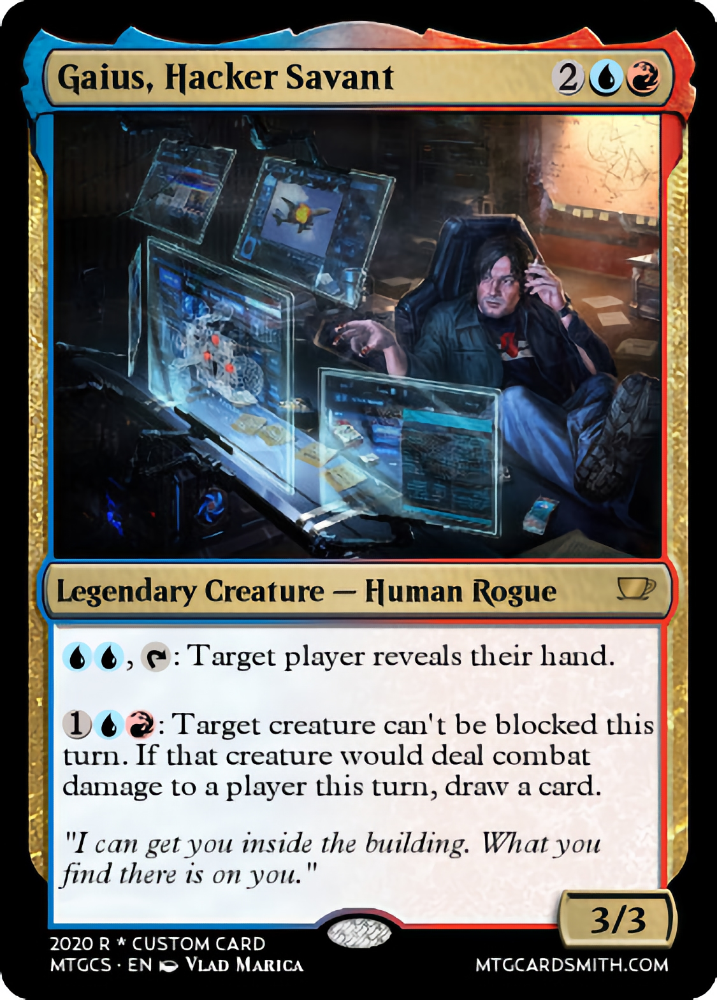

Presentations
COMP550 is a graduate-level seminar-style course focused on recent research themes in deep learning. Throughout the semesters, we will read and discuss papers on a broad range of topics. To have fruitful interactions in the class, paper discussions are organized around the different "roles" students play each week: Reviewer, Archaeologist, Researcher, Industry R&D Expert, Hacker, and Private Investigator.
Presentation roles
 |
Reviewer: Complete a full – critical but not necessarily negative – review of the paper. Follow the guidelines for NeurIPS reviewers (under "Review Content"), taking note of the example reviews included therein. In particular, please answer questions 1 to 10 under "Review Content", including assigning an overall score. |
|  | Archaeologist: Determine where this paper sits in the context of previous and subsequent work. Find and report on one prior paper that substantially influenced the current paper and one newer paper that cites this current paper. |
|  | Researcher: Propose an imaginary follow-up project -- not just based on the current but only possible due to the existence and success of the current paper. |
 |
Industry practitioner: Propose a new application for the method in the paper (not already discussed in class), and discuss at least one positive and negative impact of this application. |
|  | Hacker: Implement a small part of the paper on a small dataset or toy problem. Do not simply download and run an existing implementation - you should implement at least a core method from the paper, though you are welcome to use (and give credit to) an existing implementation for "backbone" code. |
 |
Private Investigator: Find out background information on one of the paper authors. Where have they worked? What did they study? What previous projects might have led to working on this one? What do you think motivated them to work on this project? Feel free to contact the authors, but remember to be courteous, polite, and on-topic. Write that you're in Prof. Aykut's seminar and include a link to this page. |
 |
Non-presenters: Come up with a new title for the paper and/or a new name for the algorithm it proposes. Additionally, bring at least one question about the paper (either something you're confused about or something you'd like to hear discussed more). |
Deadline: You should meet with the instructor 3-4 days before the presentation date to discuss your slides, and the presentation should be submitted by the night before the class.
In the Fall 2021 semester, we will read and discuss these papers.